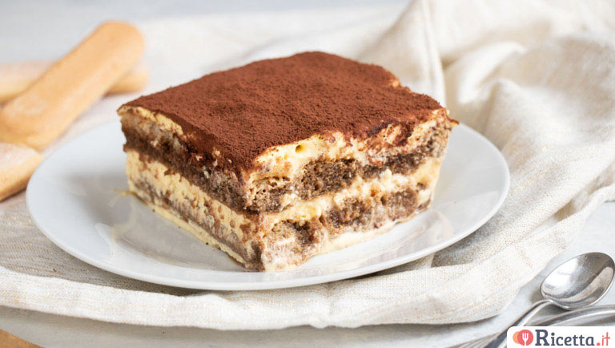

<nav style="--bs-breadcrumb-divider: url(&#34;data:image/svg+xml,%3Csvg xmlns='http://www.w3.org/2000/svg' width='8' height='8'%3E%3Cpath d='M2.5 0L1 1.5 3.5 4 1 6.5 2.5 8l4-4-4-4z' fill='%236c757d'/%3E%3C/svg%3E&#34;);" aria-label="breadcrumb">
    <ol class="breadcrumb">
        <li class="breadcrumb-item" aria-current="page"><a href=" ">HOME</a></li>
        <li class="breadcrumb-item active-page" active aria-current="page">TIRAMISU</li>
    </ol>
    </nav>
    <div class="container">
        <div class="row align-items-start">
          <div class="col">
            
          </div>
          <div class="col">
            <h2>TIRAMISU</h2>
            <h4>Ingredienti</h4>
            <ul>
                <li><strong>Mascarpone</strong> 750 g </li>
                <li><strong>Uova</strong> 260 g </li>
                <li><strong>Savoiardi</strong> 250 g</li>
                <li><strong>Zucchero</strong> 120 g</li>
                <li><strong>Caffè</strong> 300 g</li>
                <li><strong>Cacao in polvere</strong> 10 g</li>
            </ul>
          </div>
        </div>
      </div>
